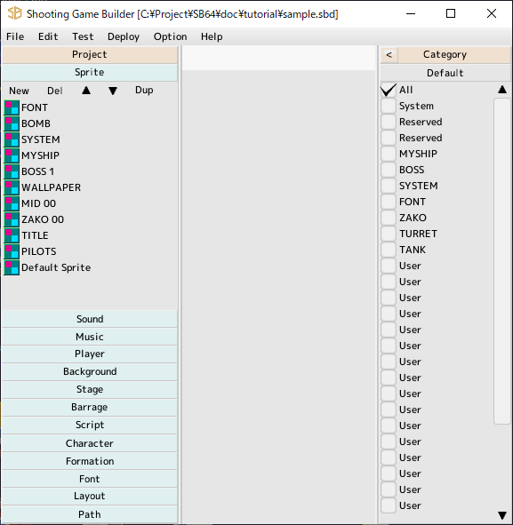

back to the original page
back to the original page
Project Window
Option menu -> please choose your language.

- The project
is displayed on the left side of the window
Clicking on a part name will show you a list of its parts
- Categories
You can find them on the right side of the window
You can narrow down what you want to see in the parts list
You can edit category edit from the part edit screen. Open it and set up a category for your part
You can change the category check in the project window to show only those parts that you have set
- Search
Searches for a part name and displays a list.
Click on the search result to display the parts in the project.
Double-click to open an editing window.
Drag a character or formation and place it on the stage.
- Docking area
Center of the window
Where to dock the edit window
- Multiple launches of the Shooting Game Builder. The following features will be disabled
- Save
Save project (Includes auto save)
- STEAM
STEAM linked features will be disabled
- Attention
Replays and scores of test runs are saved
Project
With each part selected
Note. you cannot UNDO this operation here
- Double-click
Start Editing
- New
New part
- Remove
Remove selected parts
- Up
Move selected parts up. Press SHIFT+ to go to the top. Move in 10 increments with CTRL+
- Down
Move selected parts down. Press SHIFT+ to the bottom. Move in 10 increments with CTRL+
- Duplicate
Duplicate Selected Parts
Category
Filter the categories of parts to be displayed in the project's parts list
By default, "All" is checked, so all parts data is displayed
Uncheck "All" and then check the categories you want to show
Press the default button to return to the initial state.
Back to the top of the page